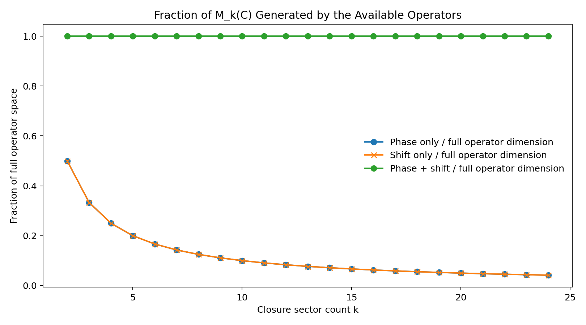
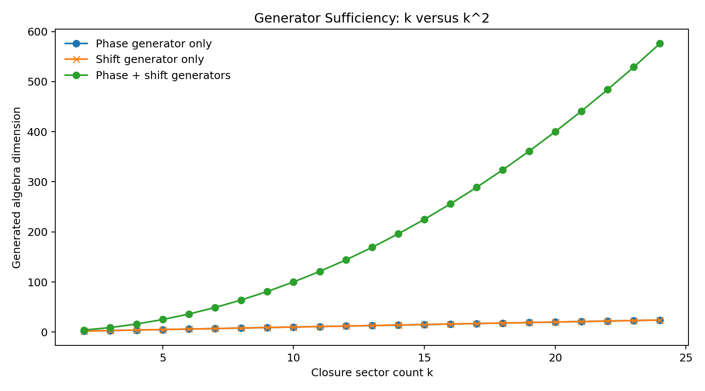
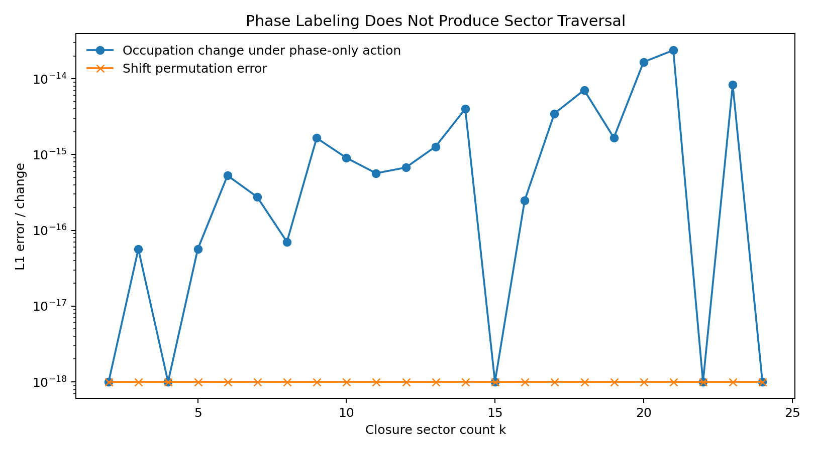

Entry 06
Why a Cyclic Dynamic Closure Requires Phase and Shift Generators
This entry addresses the remaining bridge between the EDF cyclic kernel and the \(k^2\) Weyl-closure result of Entry 05.
entry_06
Outputs folder: output
Figures
Click any figure to enlarge it.

generated_operator_fraction.png
{kind=link}

generator_algebra_dimensions.png
{kind=link}

phase_only_occupation_invariance.png
{kind=link}
Tables
Embedded previews of CSV/TSV outputs with links to the full raw files.
| k | fourier_unitarity_error | Fdag_Z_F_minus_X_error | Fdag_X_F_minus_Zinv_error |
|---|---|---|---|
| 2 | 3.2727258999107884e-16 | 3.4943518138001985e-16 | 3.4943518138001985e-16 |
| 3 | 5.902190249889093e-16 | 7.639863827611418e-16 | 8.477413193739592e-16 |
| 4 | 2.541105595495913e-16 | 4.49825367672727e-16 | 4.40426341317789e-16 |
| 5 | 7.514198773596764e-16 | 8.093301419271731e-16 | 6.836242155839289e-16 |
| 6 | 2.5439789138264824e-15 | 3.4082461358679135e-15 | 3.191052753250502e-15 |
| 7 | 3.534099601217831e-15 | 4.015419802621415e-15 | 3.5219561529690954e-15 |
Preview only — rows truncated. Open full file
| k | max_cycle_closure_error | max_gauge_to_shift_error | max_gauge_phase_commutator_error | max_dressed_weyl_relation_error |
|---|---|---|---|---|
| 2 | 3.157234899425222e-16 | 3.157234899425222e-16 | 0.0 | 3.1401849173675503e-16 |
| 3 | 8.402147043297752e-16 | 5.142752125397131e-16 | 1.5700924586837752e-16 | 8.15843973306311e-16 |
| 4 | 1.1775693440128313e-15 | 7.736788912175082e-16 | 0.0 | 3.1401849173675503e-16 |
| 5 | 1.6947206929537494e-15 | 6.377786006014895e-16 | 1.1102230246251565e-16 | 3.9350319887992495e-16 |
| 6 | 3.30066381176097e-15 | 1.0158738630919407e-15 | 1.5700924586837752e-16 | 9.871780750502622e-16 |
| 7 | 3.7261520672005745e-15 | 1.5344784316268834e-15 | 1.9229626863835638e-16 | 8.386594157882081e-16 |
Preview only — rows truncated. Open full file
| k | cycle_closure_error | gauge_to_shift_error | gauge_phase_commutator_error | dressed_weyl_relation_error | total_traversal_phase | trial | seed |
|---|---|---|---|---|---|---|---|
| 2 | 9.740555302989509e-18 | 9.740555302989509e-18 | 0.0 | 2.498001805406602e-16 | 0.0 | 0 | 2701209260 |
| 2 | 1.662786919290152e-17 | 1.662786919290152e-17 | 0.0 | 2.220446049250313e-16 | 0.0 | 1 | 4010656306 |
| 2 | 1.2318634402498117e-17 | 1.2318634402498117e-17 | 0.0 | 3.1401849173675503e-16 | 0.0 | 2 | 3295050567 |
| 2 | 3.204246043606132e-17 | 3.204246043606132e-17 | 0.0 | 3.1401849173675503e-16 | 0.0 | 3 | 1362969142 |
| 2 | 3.8347369892990866e-17 | 3.8347369892990866e-17 | 0.0 | 3.1401849173675503e-16 | 0.0 | 4 | 1441632273 |
| 2 | 3.8163497347076983e-17 | 3.8163497347076983e-17 | 0.0 | 3.1401849173675503e-16 | 0.0 | 5 | 1015070325 |
Preview only — rows truncated. Open full file
| k | phase_only_dimension | shift_only_dimension | phase_shift_dimension | expected_single_generator_dimension | expected_pair_dimension |
|---|---|---|---|---|---|
| 2 | 2 | 2 | 4 | 2 | 4 |
| 3 | 3 | 3 | 9 | 3 | 9 |
| 4 | 4 | 4 | 16 | 4 | 16 |
| 5 | 5 | 5 | 25 | 5 | 25 |
| 6 | 6 | 6 | 36 | 6 | 36 |
| 7 | 7 | 7 | 49 | 7 | 49 |
Preview only — rows truncated. Open full file
| k | phase_power | phase_only_occupation_change_L1 | shift_permutation_error_L1 | seed |
|---|---|---|---|---|
| 2 | 0 | 0.0 | 0.0 | 3027417966 |
| 3 | 1 | 5.551115123125783e-17 | 0.0 | 1564647406 |
| 4 | 2 | 0.0 | 0.0 | 1996756373 |
| 5 | 2 | 5.551115123125783e-17 | 0.0 | 898806091 |
| 6 | 3 | 5.273559366969494e-16 | 0.0 | 517116641 |
| 7 | 1 | 2.740863092043355e-16 | 0.0 | 2613818874 |
Preview only — rows truncated. Open full file
Source files
Theoretical notes
Data files
No files in this category.
Other artifacts
No files in this category.